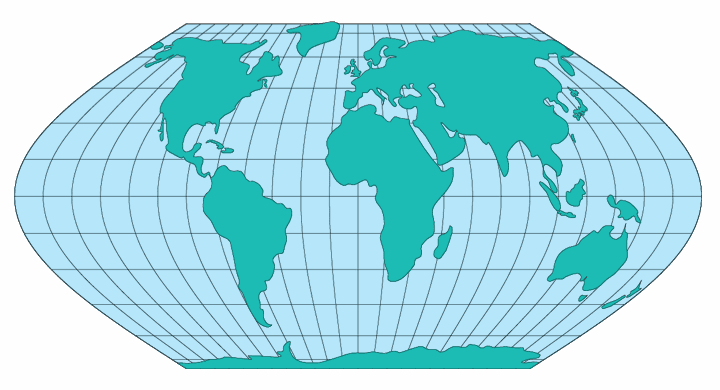

Eckert VI
Usage

Usage:*
In 1906 Max Eckert
(1868-1938)of Keil, Germany, presented a set of six new global projections
in which all poles are lines half as long as the Equator. Numbers
4 and 6 are of the most significant. No's
2,4, and 6 are equal-area projections, and
no's 1,3, and 5 are not equal-area, but have equally spaced parrallels.
The Eckert 6 or (more commonly reffered with the Roman numeral VI)
projection was not commonly used in the US. It was more popular
in the former Soviet-Union having been used in their world Atlas
"Atlas Mira".
The meridians on no.'s 5
and 6 are sinusodial curves, with the exception of the straight central
meriadians. Parrallels are unequally spaced straight lines parrallel to
each other. Poles are straight lines half the length of the equator.
Additionally, the scale is true along the 49 ° 16' N and S.
* Usage information source:
Snyder, John P. Map Projections - A Working Manual Paper U.S. Geological
Survey Professional Paper 1395. Washington: United States Government
Printing Office, 1987.